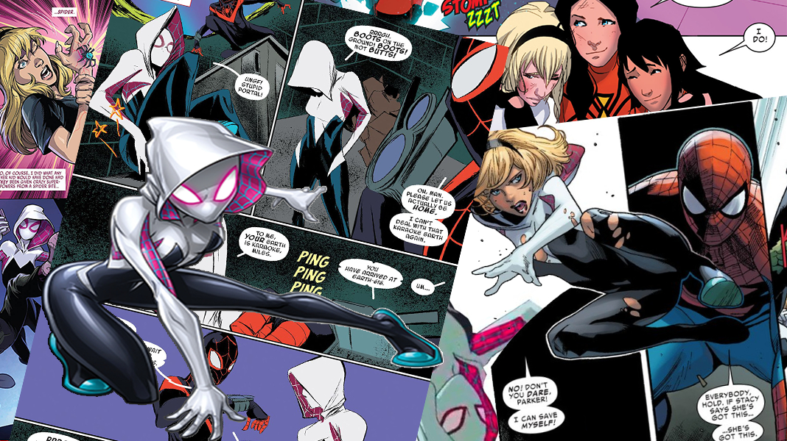
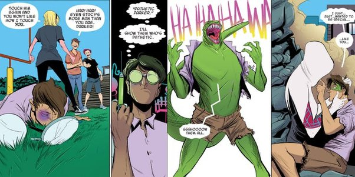

Gwen Stacy
Gwen-Aranha ou Aranha-Fantasma é o alter ego de Gwen Stacy da Terra-65 , uma realidade alternativa onde ao invés de Peter Parker, Gwen é quem foi mordida pela aranha radioativa, tornando-se a Mulher-Aranha de seu mundo.
Ela é uma personagem fictícia da Marvel Comics que apareceu pela primeira vez na história Edge of Spider-Verse #2 de setembro de 2014. Sua estreia foi excepcionalmente popular, tanto que após, ela passou a estrelar uma série própria chamada Spider-Gwen, que estreou em Fevereiro de 2015.

Na realidade da Terra-65, Gwendolyn Maxine Stacy nasceu em Forest Hills, e é filha de George e Helen Stacy, mas após a morte da mãe, foi criada apenas pelo pai, que revezava entre os compromissos de casa e seu trabalho como policial.
Gwen é uma adolescente de espírito livre com inclinações artísticas, características que a colocariam em conflito com os tipos de ética que seu pai tentou introduzi-la.
Ela tem um forte interesse por música, possuindo o papel como baterista do Mary Janes – banda liderada por Mary Jane Watson – e devido ao gosto musical em comum, tinha uma amizade com Peter Parker, seu vizinho e colega de escola.
Assim como seu pai, Gwen possui um forte senso de justiça e é uma detetive nata, o que atendeu bem à sua decisão de se tornar uma super-heroína.
Após ser picada por uma aranha radioativa, Gwen recebeu superpoderes de aracnídeo e foi apelidada pela mídia de “Mulher-Aranha”. Ela recebeu seu uniforme e um conjunto de atiradores de teia de Janet van Dyne , a então aposentada super-heroína Vespa. E, muito parecido com o Homem-Aranha da Terra-616 , Gwen passou a maior parte de suas primeiras aventuras focada em explorar e manter sua nova atenção, usando seus poderes recém-descobertos para ganho pessoal, e inclusive, tornando-se uma baterista profissional; no entanto, seu comportamento mudou depois que seu pai expressou acreditar que a Mulher-Aranha poderia facilmente ajudar as pessoas.
Não importa qual universo seja, o ensinamento “com grandes poderes, vêm grandes responsabilidades” ainda se mantém verdadeiro. E Gwen descobriria isso de uma forma terrível.
Uma vez que Peter Parker não foi o alvo da picada da aranha nesse universo, sua vida continuou a mesma. Ele era apenas mais um estudante bom em ciências, que era constantemente perseguido pelos bullies de sua escola e o qual Gwen sentia a necessidade de proteger dos ataques. Isso o fez desenvolver um complexo de inferioridade, e desesperado para ser especial como seu ídolo, a Mulher-Aranha, ele desenvolveu um experimento que o transformou em uma criatura reptiliana e perdeu o controle sobre si mesmo.
Solto pela cidade, Gwen é forçada a lutar contra com ele. E após uma longa batalha, ela consegue derrotar o Lagarto, mas Peter, ao retornar a sua forma real, morreu em consequência dos ferimentos.
Gwen, com o sentimento de culpa de ter matado seu amigo, promete a Peter que passará a usar seus poderes para o bem.
Em sua carreira de combate ao crime, Gwen teve que lidar com muitos problemas, como ser perseguida pela polícia de Nova York e, por consequência, por seu pai.